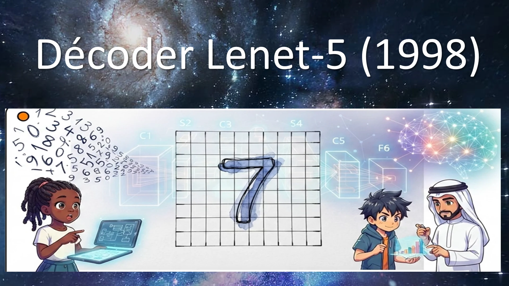
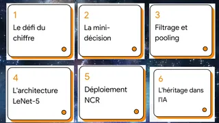
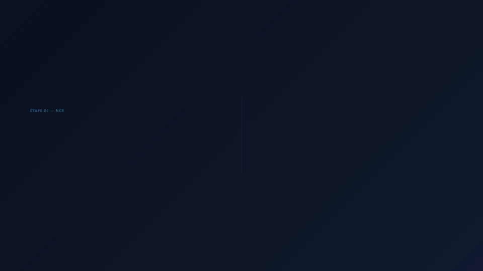
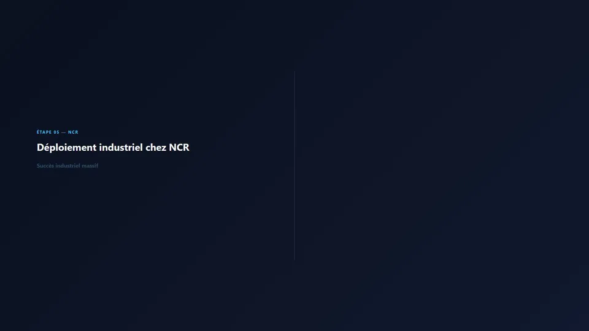
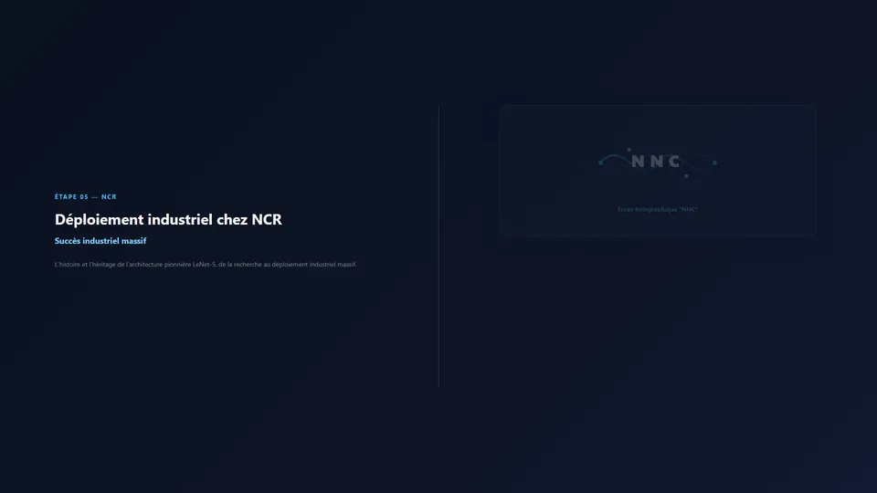
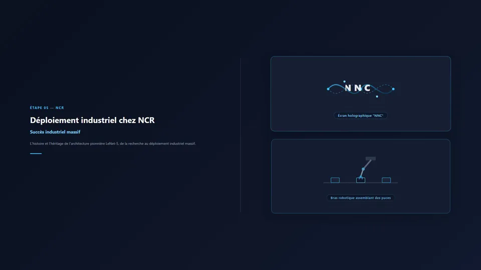
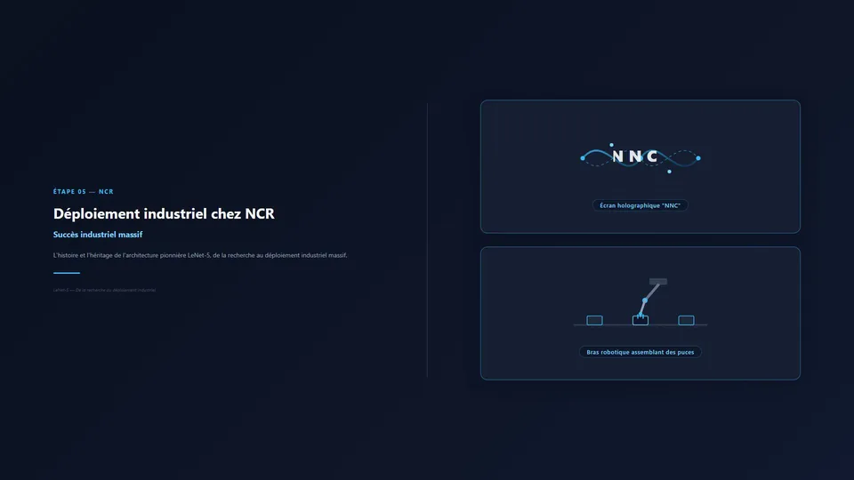
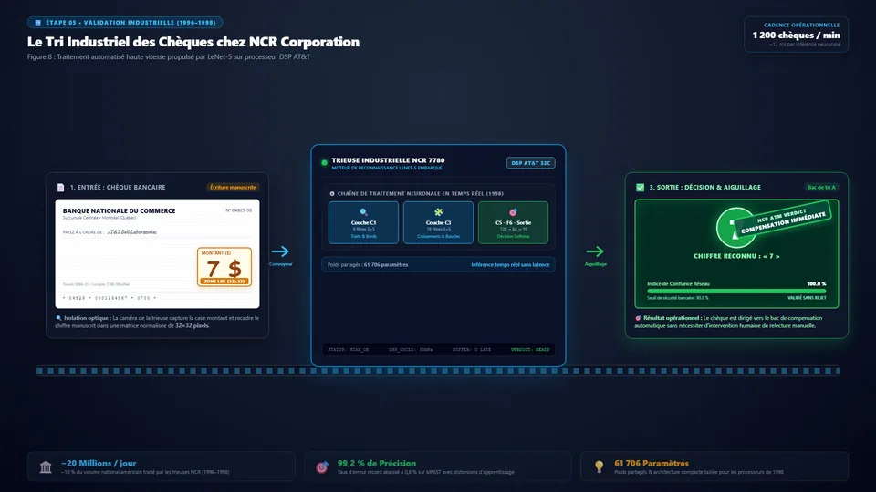

LeNet-5 : Vision par Ordinateur & Déploiement NCR
Architecture convolutive fondatrice de Yann LeCun (1998) : 60 000 paramètres, convolution 2D, sous-échantillonnage invariant, reconnaissance de millions de chèques bancaires sur guichets automatiques NCR et matrice du Deep Learning contemporain.
01. Décoder LeNet-5 (1998) : L'Origine de la Vision par Ordinateur

Chargement des notes...
LeNet-5.pptx.
Animation Remotion : 01. Convolution 2D
{kind=link}
{kind=link}
Extraction déterministe des contours primaires locaux sur l'image source avec partage invariant des poids synaptiques.






Décomposition Technique des 7 Couches LeNet-5 (1998)
Grille brute bidimensionnelle issue du chèque bancaire scanné. Conservation stricte de la topologie 2D pour garantir l'invariance géométrique face aux décalages spatiaux.
Balayage par filtres glissants avec partage des poids pour extraire les contours et traits primaires élémentaires (barres horizontales, verticales, angles).
Compression par moitié de l'information tout en conservant le signal dominant. Immunise le réseau contre les micro-distorsions et tremblements du tracé manuscrit.
Combinaisons non complètes et asymétriques des 6 cartes précédentes pour forcer chaque carte à apprendre des motifs composites distincts (boucles, intersections, arcs).
Dernière étape de compression spatiale stabilisant définitivement les caractéristiques avant la transition vers la classification dense.
Le « cerveau décisionnel » qui agrège l'ensemble des motifs spatiaux extraits pour synthétiser la représentation abstraite du chiffre.
Calcul de la distance Euclidienne par rapport au motif de référence de chaque chiffre. L'unité avec la distance minimale désigne le chiffre reconnu.
Ressources Téléchargeables & Accès Déploiement
LeNet-5.pptx
28 diapositives 16:9 haute résolution, intégration native des 5 vidéos MP4 plein écran et des notes intégrales de conférencier dans le volet Présentateur.
04_lenet5_pipeline.mp4
Animation 1080p @ 30 fps de la traversée intégrale des 7 couches convolutives, de sous-échantillonnage et denses.
{kind=link}
01_convolution.mp4
Balayage 2D par filtre glissant 5×5, extraction de contours élémentaires et partage des poids.
02_neurone.mp4
Somme pondérée synaptique et test de seuil d'activation déterministe.
{kind=link}
03_pooling.mp4
Sous-échantillonnage 2×2, compression spatiale de moitié et invariance géométrique.
{kind=link}
ncr-slide.mp4
Figure 8 animée : Traitement des chèques bancaires par les machines NCR propulsées par LeNet-5 (20M chèques/jour, précision 99.2%).
lenet5_pedagogique.mp4
Film complet de synthèse de la vision par ordinateur et démonstration du modèle interactif.
slides.json
Base JSON complète des 28 diapositives, horodatages, objets multimédias typés et notes intégrales.
index.tsv
Tableau chronologique des 21 timestamps précis correspondant à chaque capture de la présentation vidéo.